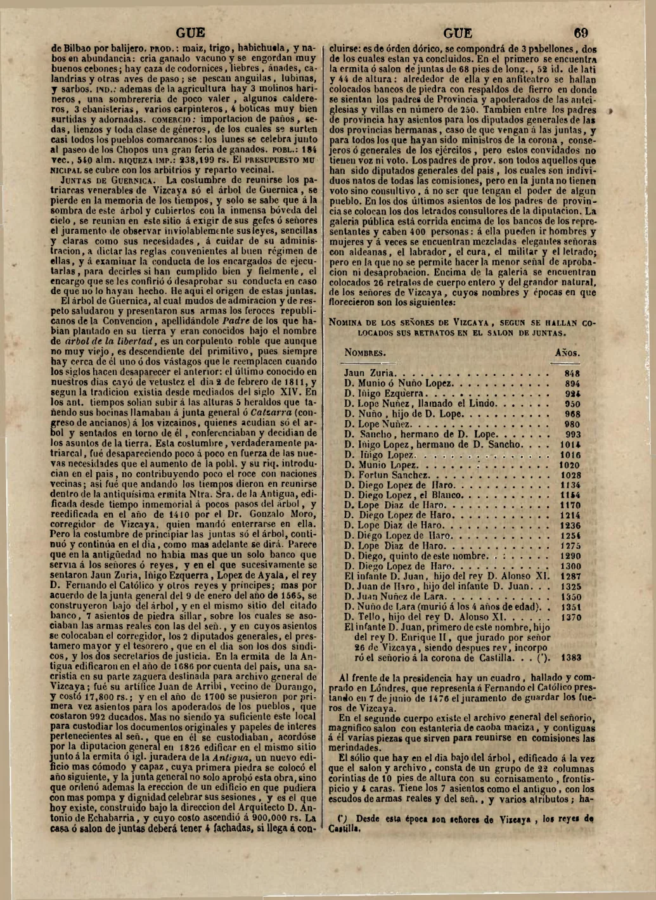

{kind=link}
Probado por facsímil
Madoz 1847 recoge una tradición en la que cinco heraldos suben a alturas y tañen bocinas para llamar a Junta General o Catzarra.
Llorente 1807 y Madoz 1847 refuerzan la transmisión erudita de las cinco bocinas antes de Trueba. Sin embargo, no enumeran Gorbeia, Oiz, Sollube, Ganekogorta y Kolitza/Colisa como sistema medieval de cumbres bocineras.
Lectura correcta: Llorente confirma cinco bocinas como medio de convocatoria; Madoz introduce o recoge el motivo de heraldos y alturas; Trueba desplaza la tradición hacia una geografía literaria de montes, primero genérica y después nominal.
Verificado por facsímil/PDF primario
La publicación de Antonio de Trueba de 1872 queda incorporada como primer punto firme localizado para la lista nominal completa de los cinco montes bocineros: Gorbea, Oiz, Sollube, Ganecogorta y Colisa.
“bocinas de guerra en los cinco montes mas altos de Vizcaya, que se cree fuesen Gorbea, Oiz, Sollube, Ganecogorta y Colisa”
Lectura correcta: 1872 queda verificado como primer punto firme localizado para la lista canónica completa. No demuestra por sí solo antigüedad medieval de esa lista.
Esta página sigue sin cerrar una dependencia directa entre autores, pero actualiza el estado documental: Madoz 1847 queda confirmado por facsímil directo como fuente puente entre las bocinas forales y la recepción montañesa posterior.
La cadena Llorente → Madoz → Trueba continúa siendo una hipótesis historiográfica fuerte, no una filiación textual demostrada. La novedad es que Pascual Madoz, en 1847, ya describe cinco heraldos que suben a las alturas y tañen bocinas para llamar a Junta General o Catzarra.
Esto adelanta a Trueba una formulación clave: no la lista nominal de cinco montes concretos, pero sí una escena con cinco, bocinas y alturas.
“En los ant. tiempos solían subir á las alturas 5 heraldos que tañendo sus bocinas llamaban á junta general ó Catzarra…”
Referencia interna del proyecto: Pascual Madoz, Diccionario geográfico-estadístico-histórico de España y sus posesiones de Ultramar, tomo IX, entrada Guernica, Madrid, 1847, p. 69 impresa.

Madoz 1847 recoge una tradición en la que cinco heraldos suben a alturas y tañen bocinas para llamar a Junta General o Catzarra.
Madoz no enumera Gorbea, Oiz, Sollube, Ganekogorta ni Colisa/Kolitza. Tampoco prueba una lista medieval cerrada ni demuestra que Trueba copiara directamente de Madoz.
| Afirmación | Nivel |
|---|---|
| La obra de Llorente está localizada. | Documentado |
| Barrio/Bañales citan Llorente para bocinas y Juntas. | Documentado en fuente secundaria institucional |
| Llorente es eslabón moderno fuerte. | Probable, pendiente de facsímil directo |
| Madoz espacializa la tradición hacia alturas/heraldos. | Documentado por facsímil directo |
| Dependencia directa Llorente → Madoz → Trueba. | Posible, no probada |
| Lista medieval cerrada de cinco montes concretos. | No probado |
La parte de Madoz queda cerrada para esta fase. Lo que queda pendiente es localizar el facsímil útil de Llorente 1807, especialmente p. 390 y pp. 463-464. Hasta entonces, esta página debe seguir como investigación en curso y no como conclusión pública fuerte.
La revisión del Tomo II de Noticias históricas de las tres provincias vascongadas confirma que Juan Antonio Llorente transmite la fórmula de la junta general llamada por medio de las cinco bocinas.
El pasaje clave está en la página impresa 464. Allí aparecen Juan Núñez de Lara y doña María Díaz de Haro en Guernica/Gernika, con caballeros, escuderos e hijosdalgo del condado, llamados á junta general por medio de las cinco bocinas.
Límite documental: Llorente no enumera Gorbeia/Gorbea, Oiz, Sollube, Ganekogorta ni Kolitza/Colisa. La expresión cercana sobre “los montes que de derecho le pertenecían” no debe confundirse con la lista moderna de montes bocineros.
Contexto previo del comentario de Llorente.
Contiene la fórmula “por medio de las cinco bocinas”.
{kind=link}
{kind=link}